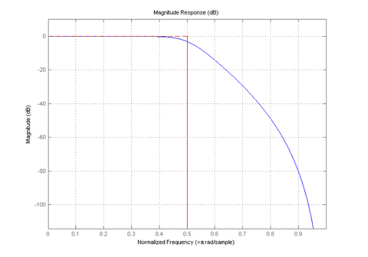
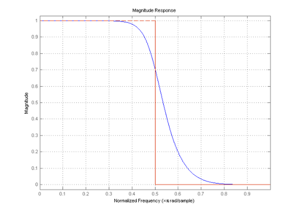
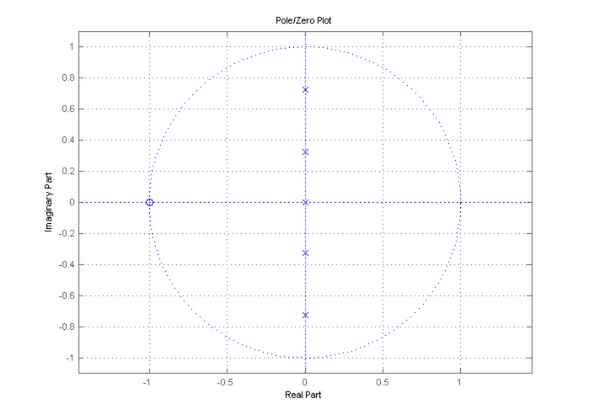
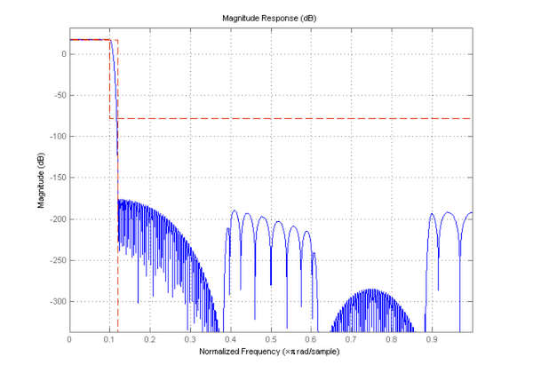
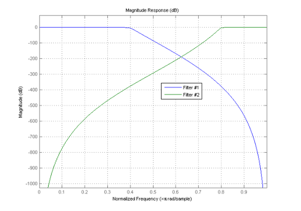
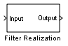

離散時間フィルター (DFILT) オブジェクトのご利用の前に
DFILT オブジェクトを使用すると、直接型や 2 次セクション型、ラティス、状態空間を含むさまざまな構造の離散時間フィルターのシミュレーションと解析を行うことができます。
目次
ヘルプ
コマンド ウィンドウで "help dfilt" と入力すると、Signal Processing Toolbox™ でサポートされている構造と dfilt オブジェクトを操作するメソッドのリストが表示されます。サポートされている構造のリストに直接アクセスする場合は、"help dfilt.structures" と入力します。特定の構造またはメソッドの詳細を参照するには、"help dfilt.<structure>" または "help dfilt/<method>" と入力します。以下に例を示します。
help dfilt/freqz
FREQZ Discrete-time filter frequency response.
[H,W] = FREQZ(Hd,N) returns the N-point complex frequency response
vector H and the N-point frequency vector W in radians/sample of the
discrete-time filter Hd. The frequency response is evaluated at N
points equally spaced around the upper half of the unit circle. If N
isn't specified, it defaults to 8192.
FREQZ(Hd) with no output argument will launch FVTool in the Magnitude
and Phase Response.
[H,W] = FREQZ(Hd) returns a matrix H if Hd is a vector. Each column of
the matrix corresponds to each filter in the vector. If a row vector
of frequency points is specified, each row of the matrix corresponds to
each filter in the vector.
For additional parameters, see SIGNAL/FREQZ.
See also DFILT, SIGNAL/FREQZ, FVTOOL.
離散時間フィルターの作成
DFILT オブジェクトを作成するには、使用する構造を選択する必要があります。たとえば、直接型 FIR または直接型対称 FIR として線形位相偶数次数 FIR フィルターを実装できます。
b = fir1(50,.4); % 50th-order linear-phase FIR filter h1 = dfilt.dffir(b); % Direct-form FIR implementation h2 = dfilt.dfsymfir(b); % Symmetric direct-form FIR implementation
通常は、明示的に DFILT フィルターを作成しません。代わりに、FDESIGN を使った設計の結果としてこれらのフィルターが得られます。
f = fdesign.lowpass('N,F3dB',5,.5); h = design(f,'butter'); % 5th-order IIR filter
フィルター構造を変換するには、CONVERT メソッドを使用します。
hdf1 = convert(h,'df1'); % Direct-form I implementation hdf1t = convert(h,'df1t'); % Transposed direct-form I implementation hdf2 = convert(h,'df2'); % Direct-form II implementation hdf2t = convert(h,'df2t'); % Transposed direct-form II implementation
離散時間フィルターの情報は、info メソッドを呼び出して取得します。以下に例を示します。
info(h1)
Discrete-Time FIR Filter (real) ------------------------------- Filter Structure :Direct-Form FIR Filter Length : 51 Stable :Yes Linear Phase :Yes (Type 1)
Filter Design Toolbox™ がインストールされ、フィルターが FDESIGN で設計されている場合、オプションの文字列の引数 'long' が info() に渡され、設計メソッド、オプション、仕様、測定値、および実装コストを含むフィルターの詳細な情報を取得できます。
オブジェクトのコピーを作成するには、copy メソッドを使用します。以下に例を示します。
hdf1_2 = copy(hdf1);
構文 hdf1_2 = hdf1 を使用すると、オブジェクト ハンドルのみがコピーされ、新しいオブジェクトは作成されません。
フィルター係数の取得と設定
フィルターの係数を通常の MATLAB® ベクトルとして処理するには、フィルターの係数を常にオブジェクトから取得します。既存の DFILT オブジェクトの係数を変更するには、新しい係数を設定します。
直接型 FIR 構造にのみ、分子係数があります。この係数は、フィルターの重みとしても知られています。
h1
h1 =
FilterStructure: 'Direct-Form FIR'
Arithmetic: 'double'
Numerator: [1x51 double]
PersistentMemory: false
b = get(h1,'Numerator'); % Assign the coefficients to vector b bnorm = b./max(b); % Manipulate the vector as usual set(h1,'Numerator',bnorm); % Set the modified coefficients
直接型 IIR 構造には分子係数と分母係数があります。
hdf1
hdf1 =
FilterStructure: 'Direct-Form I'
Arithmetic: 'double'
Numerator: [1x6 double]
Denominator: [1x6 double]
PersistentMemory: false
num = get(hdf1,'Numerator'); den = get(hdf1,'Denominator');
フィルター解析
フィルター処理以外にも、DFILT オブジェクトに対してさまざまな解析を実行できます。分子ベクトルと分母ベクトルで動作する多くの解析関数は、DFILT オブジェクトで動作するようにオーバーロードされています。
[H,w] = freqz(hdf2t); % Frequency response [Gd,w] = grpdelay(hdf1); % Group-delay [hi,n] = impz(h2); % Impulse response
ただし、プロットを生成する解析関数は、通常の MATLAB Figure の代わりに Filter Visualization Tool (FVTool) を使用してプロットするため、DFILT オブジェクトと共に使用するとさらに効果的です。
hfvt = fvtool(hdf1t);
set(hfvt, 'Color', [1 1 1])
 FVTool では、さまざまなサンプリング周波数の設定 (軸の任意の場所を右クリック)、振幅、振幅の 2 乗、振幅 (dB)、またはゼロ位相応答の表示 (Y ラベルを右クリック)、および群遅延、極-零点プロットなどの異なる解析間の切り替え (ツールバーまたは [解析] メニューを使用) が可能です。これらのアクションの多くは、FVTool の API からも実行できます (詳細は、「FVTool の API を使用」のデモを参照してください)。以下に例を示します。
set(hfvt, 'MagnitudeDisplay', 'Magnitude');
set(hfvt, 'Analysis', 'polezero');
他の解析関数は、DFILT オブジェクトでのみ使用可能です。
islinphase(h1) % Checks for linear-phase
ans =
1
isstable(hdf1) % Checks for stability
ans =
1
order(hdf2) % Returns filter order
ans =
5
DFILT オブジェクトを使ったフィルター処理
フィルター処理は、選択した構造に対して実装されます。これは、常に直接型 II の転置構成を実装する通常の関数 FILTER(b,a,x) よりはるかに柔軟です。
フィルター処理を実行するには、オーバーロードされた関数 FILTER と、最初の入力としての DFILT オブジェクトおよび 2 番目の入力としてのフィルター処理対象の信号を使用します。既定の設定では、'States' プロパティに保存されているフィルターの状態は、それぞれゼロに初期化されています。また、'PersistentMemory' プロパティは false で、フィルター処理を実行する前にオブジェクトがリセットされることを表しています。これによって、同じシーケンスが 2 回フィルター処理され、同じ出力が生成されます。
% To filter, we use the overloaded FILTER function with the DFILT object as % its first input, then the signal to be filtered as its second input. x = ones(5,1); y = filter(hdf1, x)
y =
0.0528
0.3167
0.8111
1.1718
1.1196
zf = hdf1.States % The object stores the final conditions in the 'States' property.
zf =
Numerator: [5x1 double]
Denominator: [5x1 double]
多段フィルター
複数の DFILT オブジェクトをカスケード (シリアル) 設定またはパラレル設定のいずれかで接続できます。接続されたオブジェクトは DFILT オブジェクトであるため、DFILT オブジェクトの解析関数はすべて合成オブジェクトにも使用できます。さらに、合成オブジェクトと他の DFILT オブジェクトを接続して、任意のレベルの相互接続を生成することもできます。
Hcas = cascade(h1,hdf1); Hpar = parallel(Hcas,hdf2); y = filter(Hpar,randn(100,1));
より有益な例として、Filter Design Toolbox で使用可能な関数を調べてみましょう (次のコードを使用するには、Filter Design Toolbox がインストールされている必要があります)。間引きと補間を使用すると、効率的なシングル レート フィルターを設計できます。
f = fdesign.lowpass('Fp,Fst,Ap,Ast',.1,.12,1,96); hcas = design(f,'multistage'); set(hfvt, 'Analysis', 'magnitude', 'MagnitudeDisplay', 'Magnitude (dB)', 'Filter', hcas);
周波数変換
Filter Design Toolbox がインストールされている場合、DFILT オブジェクトに対して周波数変換を実行できます。変換は、数値の精度を最大にするため、セクションごとに実行されます。
f = fdesign.lowpass('N,F3dB',30,.4); hsos = design(f,'butter'); % Lowpass Butterworth with cutoff at 0.4 htrans = iirlp2hp(hsos,0.4,0.8); % Transformed filter is also SOS set(hfvt, 'Filter', [hsos, htrans]);
Simulink® モデルの生成
Signal Processing Blockset™ がインストールされている場合、DFILT オブジェクトの Simulink® モデルを生成して、正確なフィルター構造を維持できます。
realizemdl(hsos, 'Blockname', 'Filter Realization'); % Each 2nd-order section is implemented as transposed direct-form I
また、BLOCK メソッドを使用して、単一の S-Function 駆動ブロックを作成することもできます。このメソッドでは、Signal Processing Blockset の "Digital Filter" ブロックを使用して、フィルター オブジェクトの係数で係数フィールドを指定します。このメソッドは、"Digital Filter" ブロックでサポートされているフィルター構造でのみ機能します。
bdclose block(hsos, 'Blockname', 'Digital Filter');
Figure とモデルをクリーンアップします。
close(hfvt); bdclose
dfiltfilteringdemo.m も参照してください。